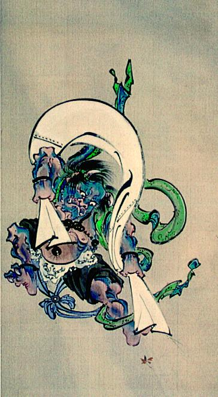

← 图鉴索引

大きな袋を担いで飛ぶ風神。その姿はオニのようで、青い。緑の羽衣を身に付けている。
著作者：河鍋暁斎／出典：親書誌：A5_pushkin_0053：（風神図；フウウジンズ）／日付：2011／資源識別子：A5_pushkin_0053_0001_0000
Copyright (c)2010- International Research Center for Japanese Studies, Kyoto, Japan. All rights reserved.